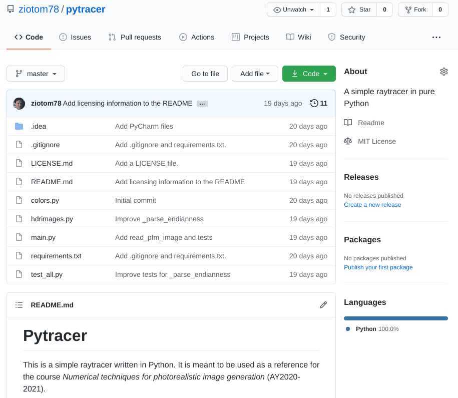
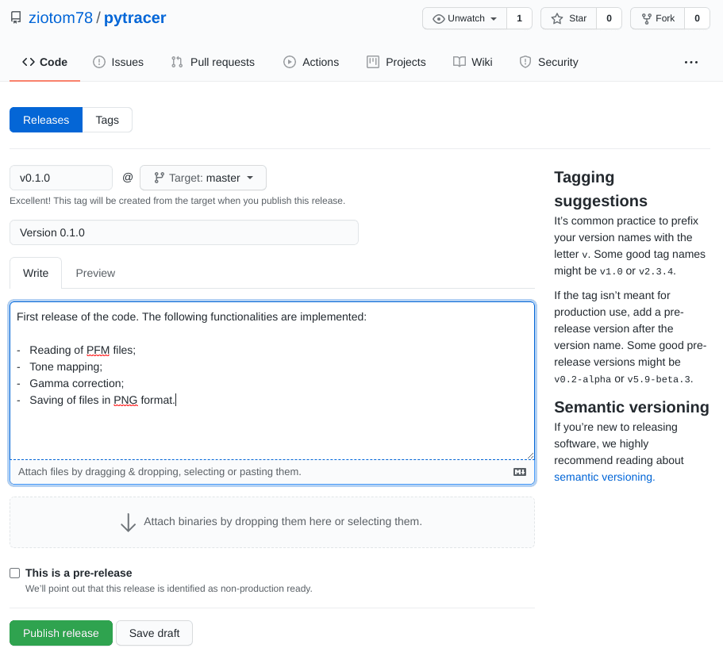
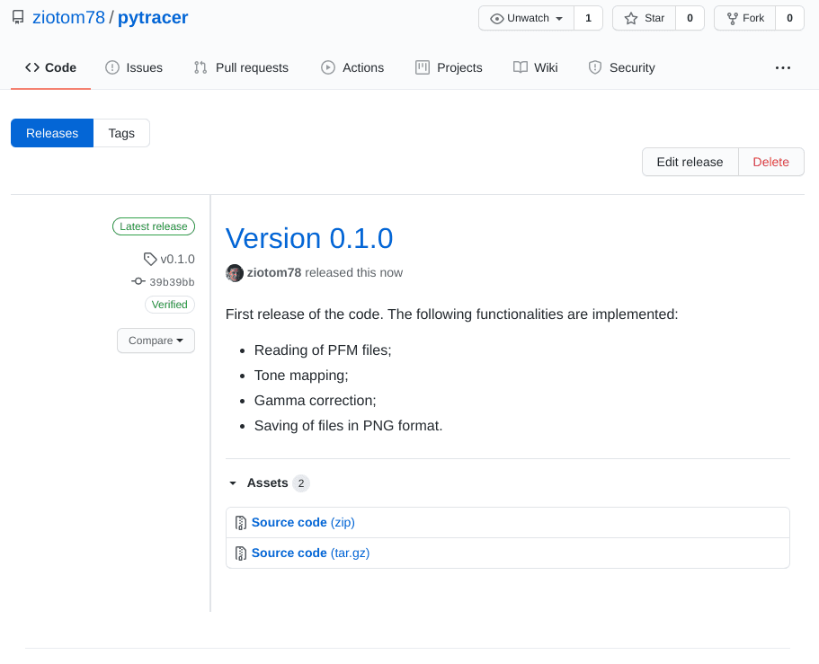
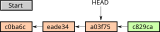
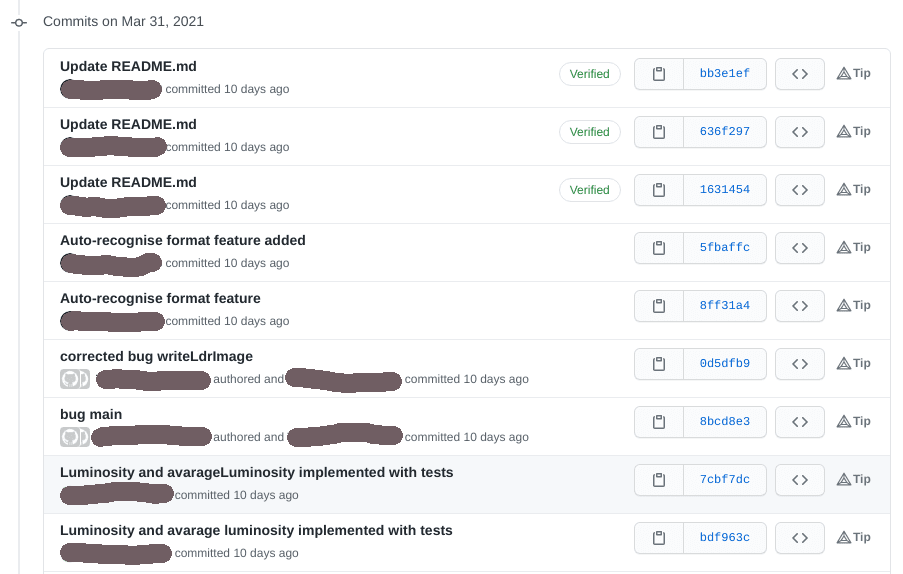
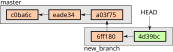
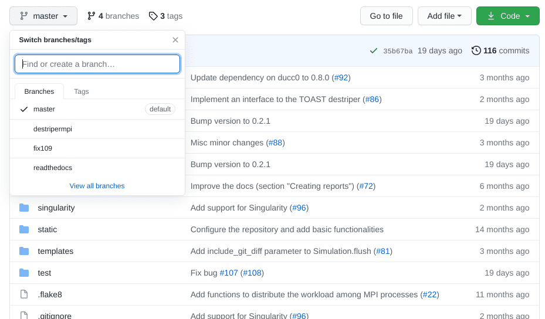
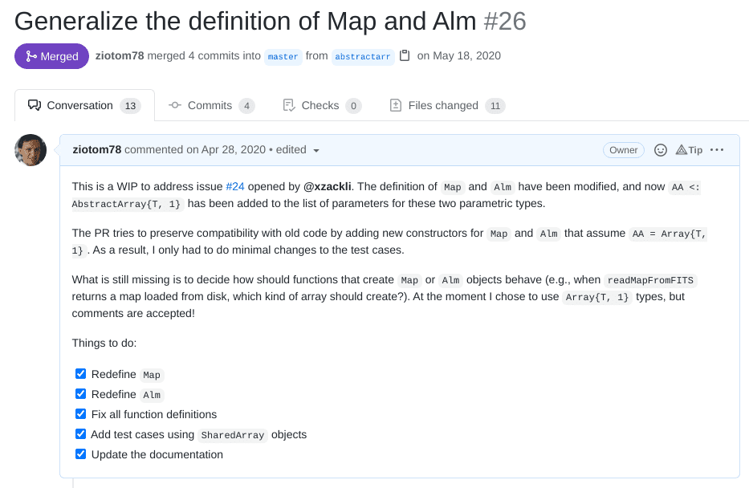

Calcolo numerico per la generazione di immagini fotorealistiche
Maurizio Tomasi maurizio.tomasi@unimi.it
With the addition of last week’s features, we are ready to release the first version of our program!
Currently, the program converts a PFM file into an LDR file (PNG, JPEG, etc.)
We will therefore release version 0.1.0.
GitHub allows you to release versions through a specific feature.



We have been using Git for a few weeks, and we should have learned how it works.
In particular, we have seen that Git saves every code change (the commit) by linking it to the previous modification:

Today we will see that this linear structure can actually be more complicated.
In the previous lessons, we implemented the code to read and write PFM files.
Each group implemented this functionality through a series of commits.
These commits were logically linked together, but this is not apparent when you open the commit page of any of your repositories (see the following slide).

Git implements the concept of a branch, which is a way to separate a sequence of commits from the main master “trunk”:

The git branch NAME command changes the active
branch; git commit always adds to the end of this
branch.
HEAD always points to the last commit of the active
branch.
git branch lists the branches (by default, at the
beginning there is only master).
git checkout -b NAME creates a new branch and makes
it active.
git checkout NAME activates the already existing
branch NAME.
git merge NAME1 NAME2 incorporates the changes from
branch NAME1 into branch NAME2; usually
NAME2 is master.
git branch -d NAME deletes a branch.
When you run git fetch or git pull to
download new commits from GitHub, all branches are imported.
GitHub allows you to navigate within the branches through a dedicated button:

The real power of branches, however, lies in pull requests.
A pull request is a request to execute a
git merge command within master.
GitHub activates a forum for each pull request so that developers
can comment on whether or not to perform the
git merge.
When merging, it is possible (and recommended) to apply squashing, which consists of merging all commits into a single one.
Squashing is very useful for getting rid of the many commits with messages like “Small fixes”, “Oops I forgot to add this”, etc.

If one of you creates a pull request on GitHub, others can add commits to that pull request with the commands
git fetch
git checkout PULL_REQUEST_NAMEas if it were a branch they created themselves
(git fetch downloads all new branches from GitHub,
including pull requests).
Pull requests are one of the fundamental features of GitHub!
Get used to using them for every “serious” modification of your code.
In job interviews, they often ask to see some of your PRs!
Start by “releasing” the 0.1.0 release of what you have written so far, and send the link of the GitHub repository to maurizio.tomasi@unimi.it
One of you should create a new pull request called
geometry, and the others should invoke
git fetch followed by
git checkout geometry.
In the geometry branch, implement these types
(following Chapter
2 of Pharr, Jakobs & Humphreys):
Vec (a three-dimensional vector).Point (a three-dimensional point).Normal (a normal vector).Transformation (a 4×4 matrix and its inverse).It might seem silly to have to define three types
Vec, Point, Normal: after all,
their structures are identical!
In some ray-tracers, in fact, a single Vec type is
used to encode vectors, points, and normals (and even RGB colors!), but
the use of distinct types will make our code more robust and
clear.
VecVec(x=0.4, y=1.3, z=0.7);are_close;Vec.neg() returns
-v);squared_norm) and of \left\|v\right\| (norm);Vec into a
Normal.Refer to the tests in the pytracer
project (file test_all.py).
PointPoint(x=0.4, y=1.3, z=0.7);Point and Vec, returning a
Point;Points, returning a
Vec;Point and Vec,
returning a Point;Point to Vec
(Point.to_vec()).Refer to the tests in the pytracer
project (file test_all.py).
NormalNormal(x=0.4, y=1.3, z=0.7);Vec·Normal and cross product
Vec×Normal and Normal×Normal;squared_norm) and of \left\|n\right\| (norm);Refer to the tests in the pytracer
project (file test_all.py).
I will now briefly show how to implement the mathematical
operations on Point, Vec and
Normal.
Be careful though: Python is a dynamic language, and allows you to do things that are not directly translatable into other languages.
This is evident in the implementation of methods that are very
similar between Point and Vec, like the sum of
two elements:
Point + Vec → Point;Vec + Vec → Vec.You can refer to the complete code of pytracer
(which we will also use in the coming weeks).
def _are_xyz_close(a, b): # No need to tell if it's a Point, Vec, Normal…
# This works thanks to Python's duck typing. In C++ and other languages
# you should probably rely on function templates or similar tools
return are_close(a.x, b.x) and are_close(a.y, b.y) and are_close(a.z, b.z)
def _add_xyz(a, b, return_type):
# Ditto
return return_type(a.x + b.x, a.y + b.y, a.z + b.z)
def _sub_xyz(a, b, return_type):
# Ditto
return return_type(a.x - b.x, a.y - b.y, a.z - b.z)@dataclass
class Vec:
x: float = 0.0
y: float = 0.0
z: float = 0.0
def is_close(self, other, epsilon=1e-5):
"""Return True if the object and 'other' have roughly the same direction and orientation"""
assert isinstance(other, Vec)
return _are_xyz_close(self, other, epsilon=epsilon)
def __add__(self, other):
"""Sum two vectors, or one vector and one point"""
if isinstance(other, Vec):
return _add_xyz(self, other, Vec)
elif isinstance(other, Point):
return _add_xyz(self, other, Point)
else:
raise TypeError(f"Unable to run Vec.__add__ on a {type(self)} and a {type(other)}.")
return _add_xyz(self, other, Vec)Vecdef dot(self, other):
return self.x * other.x + self.y * other.y + self.z * other.z
def squared_norm(self):
return self.x ** 2 + self.y ** 2 + self.z ** 2
def norm(self):
return math.sqrt(self.squared_norm())
def cross(self, other):
return Vec(x=self.y * other.z - self.z * other.y,
y=self.z * other.x - self.x * other.z,
z=self.x * other.y - self.y * other.x)
def normalize(self):
norm = self.norm()
x /= norm
y /= norm
z /= normWe also need to implement the Transformation type,
which encodes a transformation.
We will only consider translations, rotations around the three coordinate axes, and scaling transformations: this will greatly simplify our work!
Transformations can be applied to three mathematical objects:
Point);Vec);Normal).Transformation TypeIt is often necessary to have both the matrix M (which implements the transformation) and its inverse M^{-1} readily available.
Our Transformation type will therefore need to store
both matrices:
class Transformation:
def __init__(self, m=IDENTITY_MATR4x4, invm=IDENTITY_MATR4x4):
self.m = m
self.invm = invmwhere IDENTITY_MATR4x4 is a constant equal to the 4×4
identity matrix.
Obviously, the fact that we have to pass both M and M^{-1} poses a consistency problem! How do we know that the two constructor parameters are correct?
We implement a method that verifies that the product of the two matrices yields the 4×4 identity matrix (useful in tests!):
def is_consistent(self):
prod = _matr_prod(self.m, self.invm)
return _are_matr_close(prod, IDENTITY_MATR4x4)where _matr_prod and _are_matr_close are
simple methods that operate on 4×4 matrices.
We define a series of functions that construct
Transformation objects, taking care to correctly initialize
M and M^{-1}.
For example, this is the implementation of
translation (translation by a vector \vec v):
def translation(vec: Vec):
# We are adopting the dumbest solution here. In your code,
# it might be more convenient (and efficient) to define a
# HomMatrix class instead of using explicit matrices…
return Transformation(
m=[[1.0, 0.0, 0.0, vec.x],
[0.0, 1.0, 0.0, vec.y],
[0.0, 0.0, 1.0, vec.z],
[0.0, 0.0, 0.0, 1.0]],
invm=[[1.0, 0.0, 0.0, -vec.x],
[0.0, 1.0, 0.0, -vec.y],
[0.0, 0.0, 1.0, -vec.z],
[0.0, 0.0, 0.0, 1.0]],
)We will see that it is often necessary to access the inverse of a transformation.
Fortunately, since we store both M and M^{-1}, this task is very easy:
It is particularly critical to implement the functions to apply a transformation to a geometric object!
It will be necessary to implement the product operators on the
Point, Vec, Normal types:
Transformation * Transformation → Transformation; when
calculating invm, remember that (AB)^{-1} = B^{-1}A^{-1}.Transformation * Point → Point.Transformation * Vec → Vec.Transformation * Normal → Normal.The difference between points and vectors lies in the last coefficient of the representation:
P = \begin{pmatrix} p_x\\ p_y\\ p_z\\ 1 \end{pmatrix}, \vec v = \begin{pmatrix} v_x\\ v_y\\ v_z\\ 0 \end{pmatrix}.
From a code perspective, it is better to implement two distinct functions for the product: the one for vectors can save iterating over the last column of the matrices M and M^{-1}.
row0, row1, row2, row3 = self.m
newp = Point(x=p.x * row0[0] + p.y * row0[1] + p.z * row0[2] + row0[3],
y=p.x * row1[0] + p.y * row1[1] + p.z * row1[2] + row1[3],
z=p.x * row2[0] + p.y * row2[1] + p.z * row2[2] + row2[3])
w = p.x * row3[0] + p.y * row3[1] + p.z * row3[2] + row3[3]
if w == 1.0:
return newp # Avoid three (potentially costly) divisions if not needed
else:
return Point(newp.x / w, newp.y / w, newp.z / w)In the case where the last coefficient of the result is not equal to 1, it is necessary to normalize the other terms:
\begin{pmatrix} p_x\\ p_y\\ p_z\\ \lambda \end{pmatrix} \rightarrow \begin{pmatrix} p_x / \lambda\\ p_y / \lambda\\ p_z / \lambda\\ 1 \end{pmatrix}
(None of the transformations we implement lead to \lambda \not= 1, but more general transformations can: implementing this normalization in our code makes it future-proof). # Normals
We said that we also need to implement Normal, which
has the same structure as Vec but will require fewer
operations:
A transformation applied to a normal is identical to the application to a vector, but we must use the transpose of the inverse. Let’s see how to do the calculation.
The homogeneous matrix M can be represented in block form:
M = \begin{pmatrix} \textcolor{#3434AD}{A}& \textcolor{#34AD34}{\vec v}\\ \mathbf{0}& 1, \end{pmatrix}
where \textcolor{#3434AD}{A} is a 3×3 matrix.
It can be easily shown that the inverse of a homogeneous matrix is still a homogeneous matrix.
The transpose of a homogeneous matrix, however, is no longer homogeneous, because non-zero values appear in the last row:
M^t = \begin{pmatrix} \textcolor{#3434AD}{m_{11}}& \textcolor{#3434AD}{m_{21}}& \textcolor{#3434AD}{m_{31}}& 0\\ \textcolor{#3434AD}{m_{12}}& \textcolor{#3434AD}{m_{22}}& \textcolor{#3434AD}{m_{32}}& 0\\ \textcolor{#3434AD}{m_{13}}& \textcolor{#3434AD}{m_{23}}& \textcolor{#3434AD}{m_{33}}& 0\\ \textcolor{#34AD34}{v_1}& \textcolor{#34AD34}{v_2}& \textcolor{#34AD34}{v_3}& 1\\ \end{pmatrix}.
By explicitly calculating the product between the inverse transpose and a vector, we see that the last (homogeneous) coefficient is no longer 0!
However, this does not affect \hat n' (n[3] == 0): we can
therefore ignore the problem.
It is useless to construct the transposed matrix of
self.invm and calculate the product of this with the
normal.
I suggest you implement the product between matrix and normal in the most direct way possible:
The complete set of tests is in the pytracer repository, in the file test_all.py.
Implement the same tests present in that file.
geometry branch and makes a
pull request, which the others download;Vec type (without methods or
operators!), one Point, one Normal and one
Transformation;Vec and Point be
efficient!GetX/SetX: just define Vec and
Point as plain struct, or class
with public members x, y, z.inline by
declaring them in the .h file. This gives the C++ compiler
many chances to optimize the code.class Vec {
// These are "private" members (the default visibility in "class")
float x, y, z; // You can use "double", if you wish
public:
Vec(float _x = 0, float _y = 0, float _z = 0) : x{_x}, y{_y}, z{_z} {}
Vec(const Vec &); // Copy constructor; here it’s useless!
Vec(const Vec &&); // Move constructor; ditto!
float getx() const { return x; }
void setx(float _x) { x = _x; }
// Etc.
};You can use C++ templates to avoid defining over and over the
same operations on Point and Vec
types.
This example shows how to apply the technique to the sum of two elements:
// This template…
template <typename In1, typename In2, typename Out>
Out _sum(const In1 &a, const In2 &b) {
return Out{a.x + b.x, a.y + b.y, a.z + b.z};
}
Point operator+(const Point &a, const Vec &b) {
return _sum<Point, Vec, Point>(a, b); // …is used here…
}
Vec operator+(const Vec &a, const Vec &b) {
return _sum<Vec, Vec, Vec>(a, b); // …and here
}It may be useful to define a HomMatrix type that
implements a 4×4 homogeneous matrix along with basic operations on
it.
The Transformation type will then contain two
HomMatrix fields, containing the transformation matrix and
its inverse, respectively.
Be careful to define HomMatrix in a way that avoids
memory allocation on the heap, because it needs to be fast to
allocate:
Avoid using constructs like
vector<vector<float>> (C++) or
seq[seq[float]] (Nim), because the data would not be
contiguous in memory.
In fact, avoid vector (C++), seq[]
(Nim) and similar constructs altogether, as they internally use the
heap, and define a simple array of 16 elements.
You can draw inspiration from the implementations in the document A comparison between a few programming languages.
This could be a good opportunity to reduce code duplication by leveraging the metaprogramming capabilities of your language…
…but if you find it difficult to use them, don’t go crazy and just use duplicated code! (In the future, when you have studied the LISP language well, you can fix it 😀)
I’ll show an example with Nim: similar results can be achieved with Rust and D.
We want to implement a series of operations on the
Vec, Point, Normal
types.
Nim supports operator overloading, so we could write:
proc `+`(a: Point, b: Vec): Point = # Point + Vec → Point
result.x = a.x + b.x
result.y = a.y + b.y
result.z = a.z + b.z
proc `+`(a: Vec, b: Vec): Vec = # Vec + Vec → Vec
# The implementation is the same as above!
result.x = a.x + b.x
result.y = a.y + b.y
result.z = a.z + b.zbut this is very tedious!
To avoid repetition in the definition of +, we can
use metaprogramming, which is code that is not executed when the program
is launched, but while the program is being compiled.
Nim supports three different constructs that implement metaprogramming:
Let’s see what they consist of: this way you can then search the documentation of your language to see if similar paradigms are supported.
A generic function does not specify a precise type for its data.
It is useful when the operations you want to perform need to be adaptable to any type (like template functions in C++):
It is not suitable in our case, because we want to specify constraints (for example, you cannot add a vector to a normal!).
A template is a piece of code where some parts are not specified and can be substituted later as needed.
Here is an example:
template define_double_proc(fname: untyped, t: typedesc) =
proc fname(arg: t): t =
result = arg + arg
define_double_proc(double_int, int)
define_double_proc(double_float32, float32)I have defined two new functions, double_int and
double_float32, but I have not specified an equivalent for
float32 or for uint.
A macro is a sequence of instructions that generate code piece by piece.
It is the most sophisticated metaprogramming paradigm available in Nim.
It can be used to do amazing things (for example, modify the language to support more OOP constructs).
However, I advise you to be careful, because it is difficult to debug macros, and the generated code can be unreadable.
A good way to understand how to use macros is to first practice with a LISP language (Racket, Clojure, Scheme…).
What we need to quickly define mathematical operations on multiple types are obviously templates:
We can go further and make the approach extensible to the type of operation as well, so that the template can also be used for subtraction:
template define_3dop(fname: untyped, type1: typedesc, type2: typedesc, rettype: typedesc) =
proc fname*(a: type1, b: type2): rettype =
result.x = fname(a.x, b.x) # This works because "a + b" is interpreted as `+`(a, b)
result.y = fname(a.y, b.y)
result.z = fname(a.z, b.z)
define_3dop(`+`, Vec, Vec, Vec)
define_3dop(`-`, Vec, Vec, Vec)
define_3dop(`+`, Vec, Point, Point)
define_3dop(`+`, Point, Vec, Point)
define_3dop(`-`, Point, Vec, Point)
define_3dop(`+`, Normal, Normal, Normal)
define_3dop(`-`, Normal, Normal, Normal)D provides mixin template, which can be exploited to avoid
duplications in several methods of Vec, Point,
and Normal:
mixin template defSumDiff(T, Ret) {
Ret opBinary(string op)(T other) const
if (op == "+" || op == "-") {
// This is a string mixin, so that we can handle both + and - in the same code
return mixin("Ret(x " ~ op ~ " other.x, y " ~ op ~ "other.y, z " ~ op ~ " other.z)");
}
}
struct Vec {
float x, y, z;
mixin defSumDiff!(Vec, Vec);
}
struct Point {
float x, y, z;
mixin defSumDiff!(Vec, Point);
}Unfortunately, Rust does not have anything equivalent to Nim’s templates and D’s mixins. You must use macros!
Do not try to be too smart trying to combine Add and
Sub!
macro_rules! implement_sum(
($type1:ty, $type2:ty, $return_type:tt) => {
impl ops::Add<$type2> for $type1 {
type Output = $return_type;
fn add(self: $type1, other: $type2) -> $return_type {
let result = $return_type{x: self.x + other.x, y: self.y + other.y, z: self.z + other.z};
result
}
}
}
);
implement_sum!(Vec, Vec, Vec);
implement_sum!(Point, Vec, Point);Point, Vec,
Normal: the implementation should be fairly simple.Point + Vec and Vec + Vec.To simplify Transformation, I suggest defining a type
HomMatrix that implements a 4×4 homogeneous matrix;
internally use a 16-element array as you did with
HdrImage:
Vec, Point, Normal and
Transformation will be heavily used in calculations, it is
important that they be extremely efficient classes.struct instead of
class.Point
and Vec, such as addition, twice.Vec and Point types you
could use the StaticArrays.jl
library, which implements highly efficient fixed-size arrays. It’s a
very efficient library, but I don’t recommend using it in this
case.Vec and Point would
be seen by Julia as the same type SVector{3, Float32}.structmutable: you will encourage Julia
to use them as value types instead of reference
types.